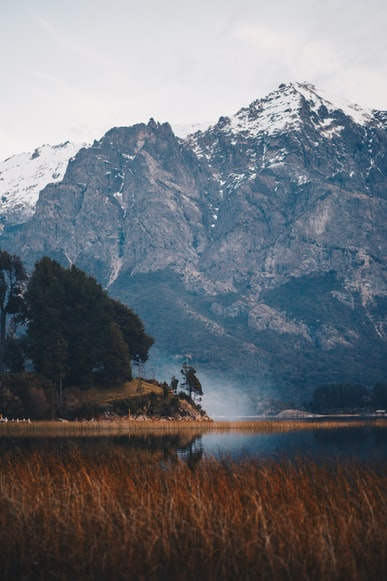
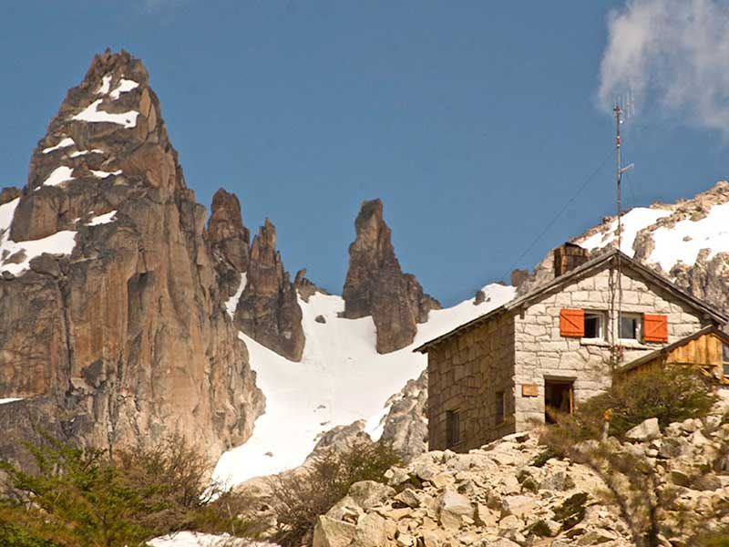

Un poco de nuestra historia
Somos un grupo de profesionales del turismo y la comunicación en las reservas naturales. Desde 2009 participamos del Programa de Educación Ambiental que lleva adelante el Parque Provincial E. Tornquinst, en la atención a las escuelas que lo visitan. En nuestra región existen reservas naturales que guardan invaluables tesoros que podemos disfrutar todo el año. Todo comenzó como una aventura de amigos para que se transforme en nuestra vocación y así provocar una nueva mirada en nuestras guíadas, en la atención al visitante y en los programas educativos. Bariloche es el lugar que nos vió nacer y crecer, donde aprendimos a caminar y disfrutar la belleza de la Patagonica.






Barilochetrekking.com concentra la oferta del senderismo local y posiciona a la ciudad de Bariloche, la Capital Nacional del Turismo Aventura, como destino por excelencia a nivel nacional e internacional, aprovechando sus características geográficas y su trayectoria en la prestación de servicios turísticos que superan con creces las cualidades de otros destinos de la Argentina.
Barilochetrekking.com invita a explorar y conocer lugares únicos, contribuyendo a la salud y educación, desarrollando el territorio, promoviendo la experiencia a través del uso y disfrute de los diferentes espacios basándose en los principios del turismo sustentable.
Barilochetrekking.com permite obtener información fiable, rápida y de primera mano. Su uso y difusión contribuye también a la seguridad, tanto en la prevención de accidentes por medio de la información y concientización como de las acciones a seguir en caso de emergencias.